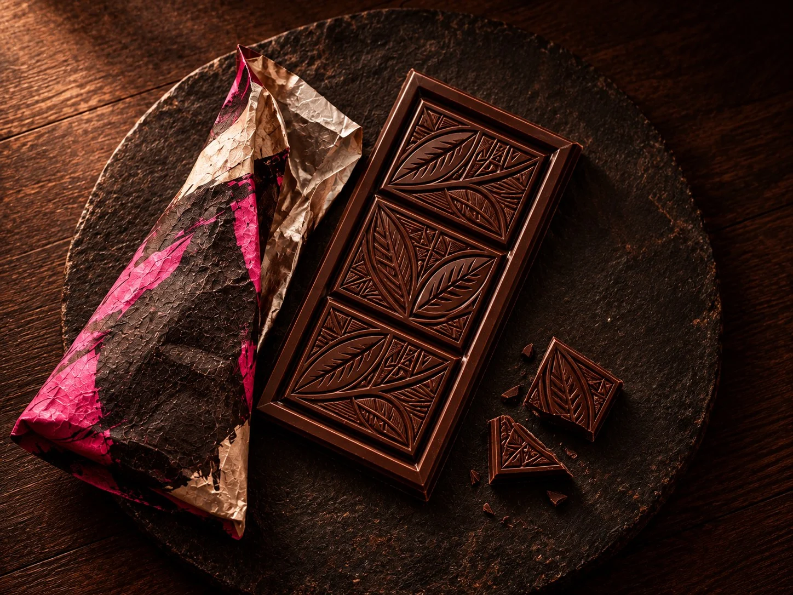
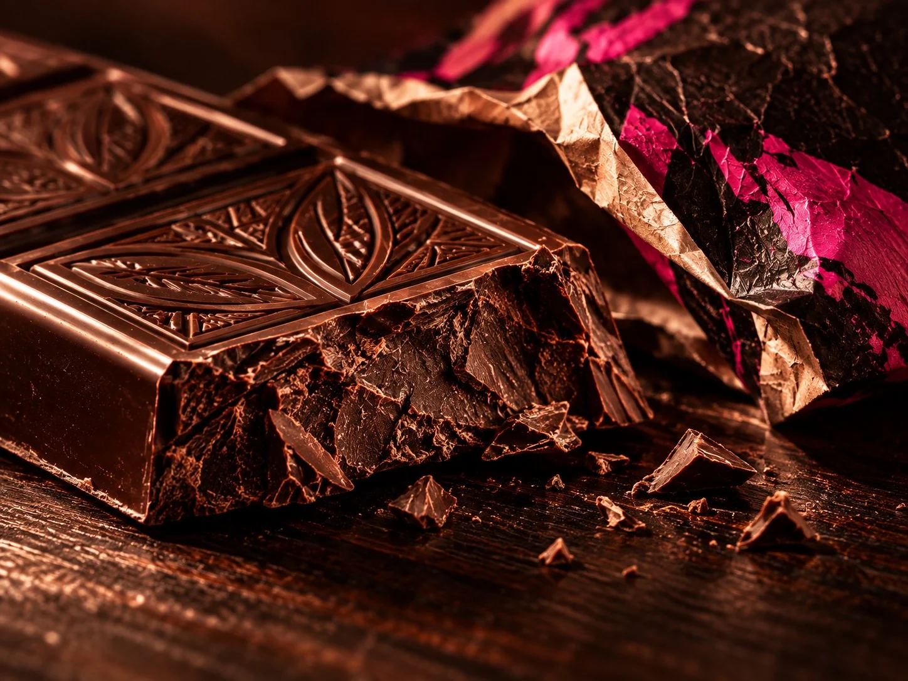
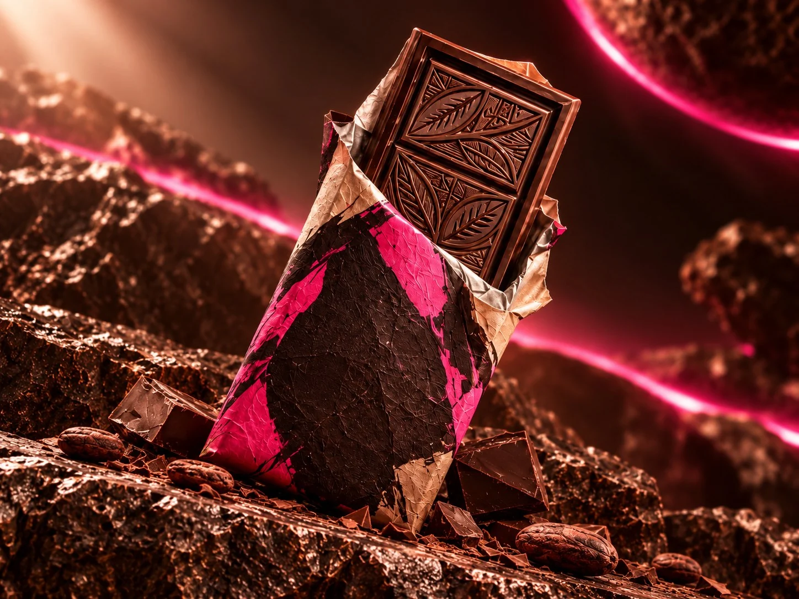

Single Origin Đắk Lắk
Sô-cô-la đen 74% Single Origin Đắk Lắk
Một thanh đen có cấu trúc chắc, mở đầu bằng trái cây khô, chuyển sang độ chua thanh rồi kết thúc bằng vị cacao rang sâu và sạch. Không thêm hương liệu để hồ sơ của mẻ hạt vẫn được nhận ra.
Bề mặt, mép đúc, điểm gãy
Màu, độ bóng, cấu trúc mặt thanh và tiếng gãy đều phản ánh cách cacao được xử lý và ổn định trước khi đóng gói.
Thông tin sản phẩm
Minh bạch đến từng tỷ lệ
Công thức ngắn, tỷ lệ rõ ràng và không dùng hương liệu tổng hợp để tầng hương của cacao không bị thay thế bởi mùi tạo sẵn.
Đặt đúng thanh 74% nàyThành phần dinh dưỡng tham khảo trên 100 g
- Năng lượng
- 579 kcal
- Chất béo
- 42 g
- Carbohydrat
- 34 g
- Đường
- 12 g
- Protein
- 8 g
- Hàm lượng cacao
- 74%
Cấu trúc hương vị
Mở vị
Trái cây khô và một chút mùi lên men sạch, xuất hiện rõ khi thanh vừa bắt đầu tan.
Hậu vị
Chua thanh giảm dần, để lại đắng cacao rang và cảm giác khô vừa phải.

Đằng sau mẻ 74%
Giữ lại phần chua và hương trái
Đắk Lắk cho thanh này độ đậm, nhưng thay vì rang đến khi chỉ còn vị đắng và cacao rang, hồ sơ nhiệt được dừng sớm hơn để giữ lại những tầng hương dễ mất. Điều này khiến thanh có nhịp vị rõ hơn: trái cây khô ở đầu, chua thanh ở giữa và cacao sâu ở cuối.
Xem bộ ba để so sánh sắc độHạt theo mẻ
Mỗi đợt hạt được đánh giá riêng trước khi chốt hồ sơ rang.
Rang vừa đủ
Mục tiêu là phát triển hương cacao mà không xóa mất độ chua tự nhiên.
Nghỉ trước khi đóng gói
Thanh được để ổn định để mùi và kết cấu cân bằng trước khi vào lớp gói cuối.
Ba hướng nếm tiếp theo
Nếu 74% quá đậm cho lần đầu, bắt đầu từ 55% hoặc 68%; nếu muốn so sánh trực tiếp, chọn bộ ba sắc độ.
Đặt bộ nếm thử


Bắt đầu từ thanh đậm nhất?
Chọn thanh 74% Đắk Lắk trong bước đặt nếm thử. Bạn có thể nhận tại điểm thử hoặc chọn giao lạnh nội thành theo khung giờ còn trống.
Đặt thanh nếm thử